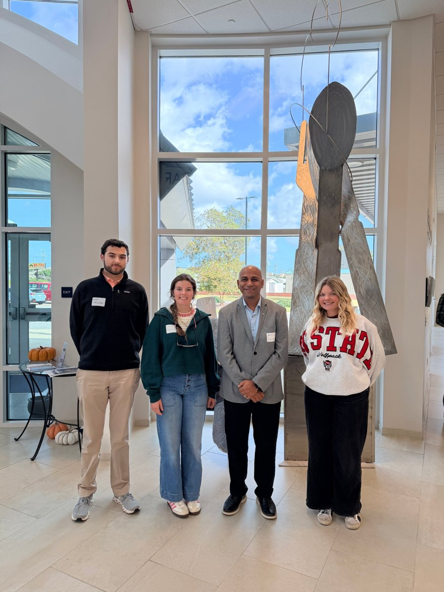
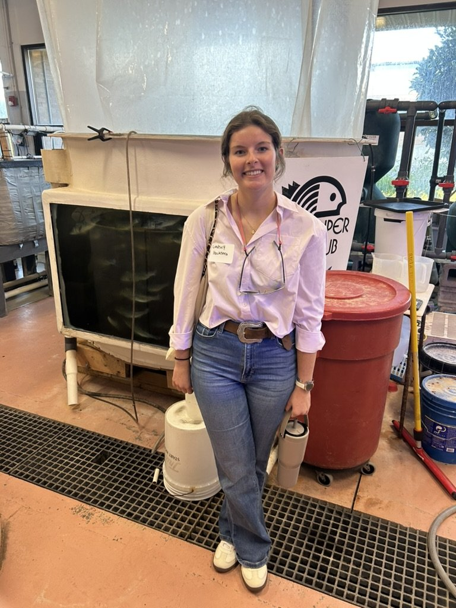
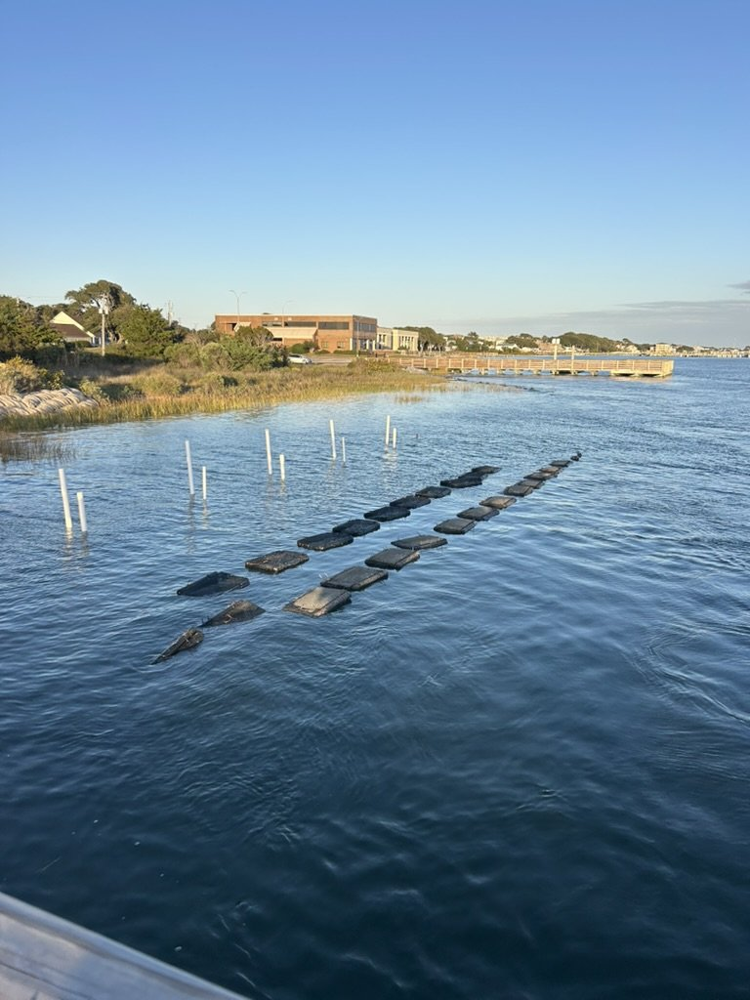

Three ABM students pitched ideas for the coast at the Blue Economy Innovation Program

The Blue Economy Innovation Program brings students, entrepreneurs, industry professionals, and educators together to develop solutions to challenges facing coastal communities and the broader blue economy. This fall, ABM students Lindsey Hockstra, Wade McCallum, and Meredith Newton went, along with ABM professor Amit Sawant.
Panels, the Down East community, and a pitch
Over the program, the students heard from industry panels, explored the blue economy and the Down East community, toured Carteret Community College's aquaculture facility, learned about entrepreneurial opportunities for students, and pitched their own ideas for addressing challenges in the blue economy.
Part of ABM's agricultural entrepreneurship courses
The program lines up with ABM's agricultural entrepreneurship series, ARE 370 and ARE 470. Meredith heard about it in Dr. Sawant's ARE 370 course. Lindsey heard about it when program director Christopher Osburn visited her ARE 470 class, and many of the topics matched the project her class is working on now, giving her new perspectives to bring back.

Why she went
"I wanted to build my entrepreneurial skills and learn more about the challenges our coastal communities face. I was excited to participate in a program where I could combine my entrepreneurial experience with creative thinking to explore solutions to real-world problems."
Would she recommend it?
"I would highly recommend this workshop to anyone interested in learning more about the challenges facing our coastal communities, developing their entrepreneurial skills, exploring the blue economy, and networking with industry professionals."

Go next year
Reach out to Christopher Osburn, director of the Blue Economy Innovation Program, to learn about opportunities. He also teaches Interdisciplinary Innovation in the Blue Economy at NC State. Watch for registration for next year's program, and if you're interested in entrepreneurship, look at ARE 370 and ARE 470.